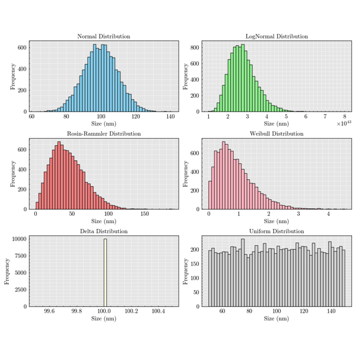
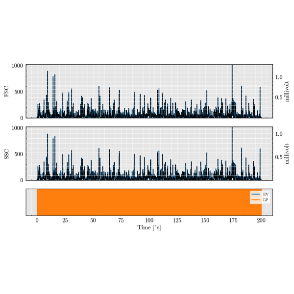
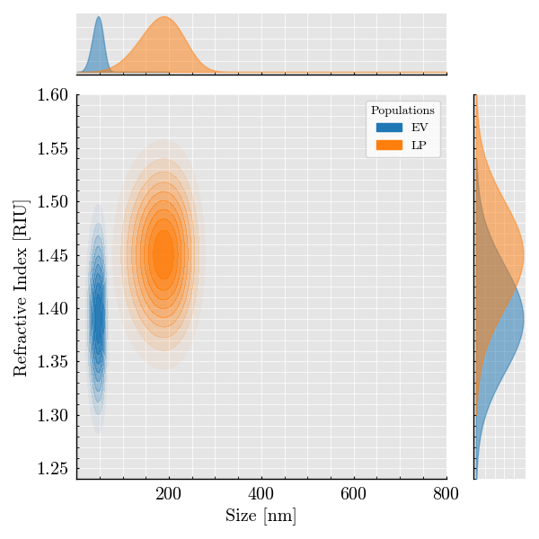
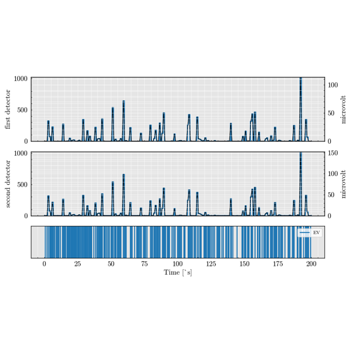

Examples: extras#  Particle Distribution Particle Distribution  Generating Signal Generating Signal  Scatterer Collection Scatterer Collection  WorkFlow WorkFlow Gallery generated by Sphinx-Gallery